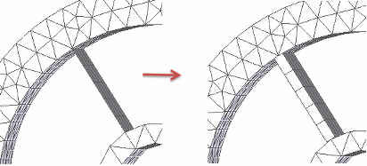
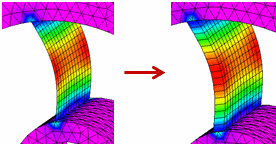

Change the study material or thickness
When you change the material or material thickness in a study that has been meshed and solved, the study results go out of date.
Change material or material properties
-
In the Simulation pane, right-click the Material node and choose the Edit Material
 command, or double-click the Material node.
command, or double-click the Material node. -
Do one of the following, depending upon model type:
-
In a part or sheet metal model, make the desired changes in the Solid Edge Material Table dialog box, and then click Apply To Model.
-
In an assembly model, do one of the following in the Edit Material dialog box:
-
Select or clear the Use material from occurrence check box.
Note:If a material is not defined in the occurrence, then the material specified in the Material List on the command ribbon is used by default.
-
From the Material List, select the material you want to apply.
Note:If you do not want to use the material in the occurrence, or the material currently specified on the command ribbon, then you can choose a new material here.
-
The results in a solved study go out of date:
The study status indicator changes from green to yellow.
-
-
From the ribbon, choose Solve.
The updated results are displayed in the Simulation Results environment.
If you want a side-by-side comparison of simulation results using different materials, save the model document under a different name, and then create a second study with the alternate material.
Change material (mesh) thickness
The material Thickness node is displayed when working with sheet metal parts or assemblies that contain surfaces or mid-surfaces.
-
In the Simulation pane, right-click the Thickness node and choose the Edit Thickness command, or double-click the Thickness node.
-
In the Edit Thickness dialog box, do one of the following:
-
Select (or deselect) the Use thickness from sheet metal check box.
-
Type a different value in the Mesh Thickness box.
-
-
Select the Mesh and Solve commands to update the study.
You can show plate thickness on surfaces using the following options:
-
In the Mesh dialog box, you can select the Show surface results option to thicken a surface before meshing the model. This is available for 2D Surface meshes and for Mixed Meshes.

-
In the Simulation Results environment, you can select the Plate Thickness option on the Home tab→Show group→Display Options menu to apply a thickness to the model surface. This makes it easier to visualize results.
